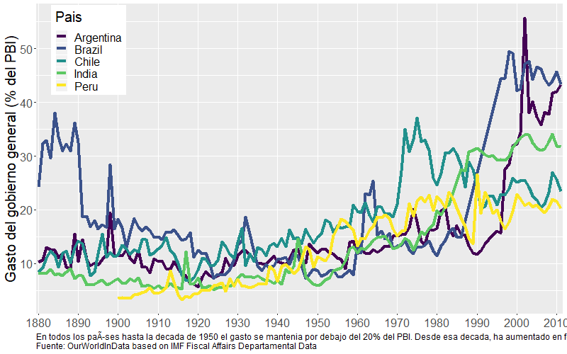
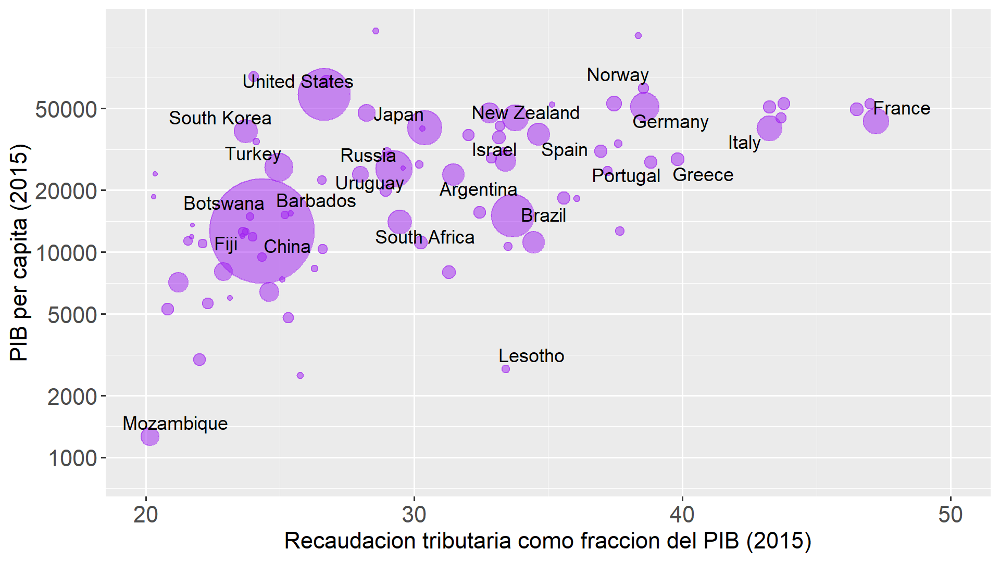
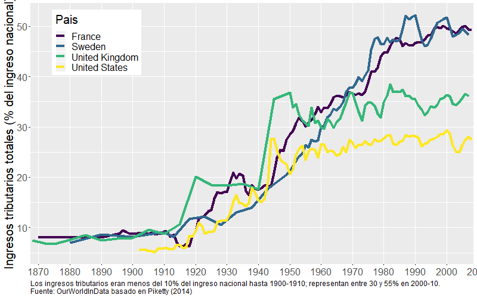
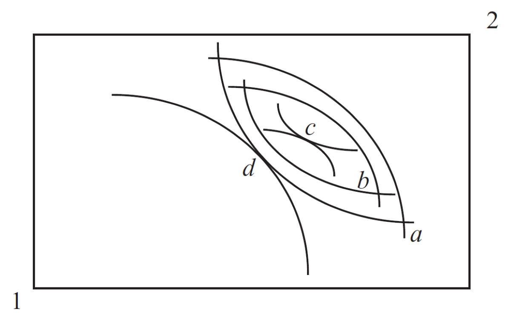
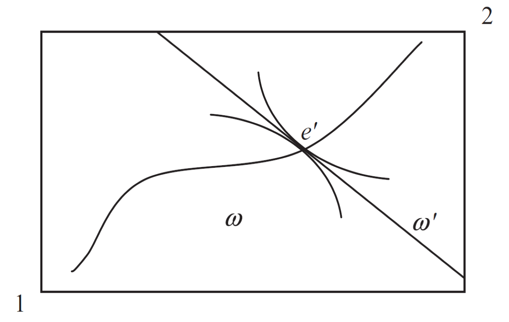

Tópicos en Economía Política Moderna
Unidad 1. Es la política, estúpido! Introducción a la economía política
Los economistas deben no sólo conocer sus modelos económicos, sino que también entender de política, intereses, conflictos, pasiones, es decir, la esencia de la vida colectiva. Por un pequeño período de tiempo, uno puede realizar cambios a través de decretos: pero para que ellos persistan, uno debe construir coaliciones y tener gente que los soporte. Es decir, se debe ser un político.
[Alejandro Foxley, ex Ministro de Finanzas de Chile]
Introducción a la economía política
- Economía y política
- Antecedentes, tradiciones y metodología
- Enfoque: limitaciones y considerandos
Economía y política
- Economía \(\longrightarrow\) uso óptimo de recursos escasos
- Política \(\longrightarrow\) estudio del poder y la autoridad
- Poder \(\longrightarrow\) habilidad (capacidad) de individuos y/o grupos para lograr sus objetivos
- En cualquier estudio que pretenda describir la complejidad de las relaciones sociales en sus dimensiones económicas y políticas, estos elementos deben analizarse en forma conjunta.
Economía y politica (cont.)
- La economía como disciplina nace y se desarrolla como economía política (Smith, Ricardo, Marx, JS Mill, Say). La economia neoclásica enfoca en planificador benevolente \(\longrightarrow\) enfoque normativo
- ¿Cómo y porqué es la política económica como es? ¿Cómo es el proceso político de toma de decisiones colectivas por parte de agentes con preferencias diferentes \(\longrightarrow\) enfoque positivo
- Esto último es lo que se entiende modernamente por economia política
Economía y política: tradiciones
- Tres tradiciones nutren a la economia política
- Teoría de la política macroeconómica \(\longrightarrow\) exp. racionales, incentivos del policy maker y comportamiento estratégico. Teórica; instituciones políticas poco realistas
- Teoría de la elección pública \(\longrightarrow\) finanzas públicas, política regulatoria. Eje: problema de agencia entre el gobierno (agente) y ciudadanos (principal).
- Teoría de la elección social \(\longrightarrow\) modelos formales de análisis político. Se inicia con los modelos de votación espacial y la teoría axiomática de la elección social (Arrow). Estudia decisiones colectivas en instituciones políticas específicas.
Enfoque metodológico
Enfoque de la economía política moderna: síntesis Utiliza el enfoque de equilibrio general de la teoría macroeconómica de la política y explota las herramientas de la teoría de la elección racional para el análisis de los problemás principales de la teoría de la elección pública
Enfoque: resumen
- Enfoque consiste en aplicar métodos de análisis modernos al ámbito político \(\longrightarrow\) politicas económicas resultado de interacción entre individuos racionales con preferencias heterogéneas
- Si bien el método en ocasiones suele ser criticado por excesivamente formal y racionalista, se pueden incorporar otros paradigmas para analizar el efecto de relajar ciertos supuestos.
Las tres I’s
Intereses. Representados por preferencias de diferentes agentes por alternativas de políticas. Se modelan al nivel individual.
Instituciones. Restricciones creadas por los humanos que estructuran la interacción económica, política y social.
Ideas. Incluyen paradigmas, sentimientos públicos, programas y encuadres que moldean e impactan el tipo y forma de las decisiones adoptadas.
Heterogeneidad en políticas y outcomes
- Hechos estilizados
- Explicaciones económicas y políticas
- ¿Por qué fracasan los países?
Gasto público y PIB
- Existe una relación positiva entre gasto público y PIB per capita con alguos outliers y posibles no linearidades
- ¿Cómo se explican estas diferencias desde un enfoque puramente económico sin considerar la politica?
- Posibles explicaciones \(\longrightarrow\) 1) mayor rol redistributivo del Estado; 2) instituciones políticas –presidencialismo vs parlamentarismo, mayoritario vs representación proporcional.
Gasto público y PIB (cont.)

Gasto público (\(\%PIB\)) y PBI per capita
Gasto público y PIB: evolución
- Si miramos evolución comparada de largo plazo, observamos claras tendencias a mayor participación estatal en la economía \(\longrightarrow\) medido tanto por el lado de gastos como de recursos y también para diferentes países
- También aquí la política es importante \(\longrightarrow\) expansión y fortalecimiento de las democracias en los últimos 150 años
- ¿Diferentes preferencias? ¿Diferentes instituciones?
Gasto público y PIB: evolución (cont.)

Evolución gasto público (\(\%PIB\)) - Paises industriales
Gasto público y PIB: evolución (cont.)
Evolución gasto público (\(\%PIB\)) - Países en desarrollo
Tributos y PIB
- Países pobres versus ricos con similar recaudación tributaria –ie. tamaño del Estado- \(\longrightarrow\) Lesotho/Alemania
- Países con similar riqueza pero diferente rol del Estado \(\longrightarrow\) Oman y Arabia Saudita / EEUU / Noruega
- Economia puede explicar algunas diferencias \(\longrightarrow\) ley de Wagner, efecto “umbral”
- Varias teorías explicativas desde el estudio de la política \(\longrightarrow\) 1) maldición de los recursos, 2) corrupción, 3) incentivos político-electorales
Tributos y PIB (cont.)
Recaudacion tributaria (\(\%PIB\)) y PBI per capita
Tributos y PIB (cont.)
Evolución recaudación tributaria (\(\%PIB\)) - Países industriales
“It’s politics”
- Individuos heterogeneos en varios aspectos
- Desvíos de los teoremas de bienestar
- Tipos de heterogeneidad e implicancias
- ¿Cómo se deciden los “pesos”?
Heterogeneidad de intereses
- Un aspecto relevante de la política es en lo que hace a la heterogeneidad de intereses
- Restricciones políticas derivadas de ello implica que las políticas adoptadas en la práctica no son óptimas
- Implicaciones positivas \(\longrightarrow\) si la política óptima se encuentra no resulta cierto que esta se implementa (implícito en la economía del bienestar)
- Implicaciones normativas \(\longrightarrow\) ¿cómo pueden diseñarse instituciones y políticas para lograr ciertos objetivos?
Los teoremas del bienestar
Primer teorema del bienestar (1TDB) \(\longrightarrow\) cualquier asignación que resulta de un equilibrio competitivo es Pareto-eficiente
Segundo teorema del bienestar (2TDB) \(\longrightarrow\) bajo preferencias convexas, cualquier asignación Pareto-eficiente puede resultar en un equilibrio competitivo (mediante una reasignación de las dotaciones iniciales)
- Los teoremas son las dos espadas principales de la economía del bienestar en cuanto orientaciones de política económica –en este sentido la economía del bienestar es un asunto de economía normativa [Blaug (1978), Price (1977)]
1TDB: Eficiencia asignativa
 
2TDB: Eficiencia en (re)distribución
Cada dotación origina un equilibrio
“Todos los modelos están mal…”
- Eficiencia Paretiana \(\longrightarrow\) deseable pero débil e insuficiente –una persona consumo todo y el resto nada será Pareto-eficiente
- Condiciones muy estrictas –externalidades, competencia, información perfecta e individuos racionales
- El 2TDB asume que no hay trade-off eficiencia versus equidad.
- Es un resultado con profundas implicancias sobre cómo pensar la organización de la actividad económica en cualquier economía [Stiglitz (1991)]
Sobre la redistribución inicial
- El 2TDB supone implícitamente que la redistribución inicial de la dotación/riqueza se hace via transferencias lump-sum –no voluntarias- entre consumidores [en la práctica esto sería un impuesto lump-sum]
- El tamaño de la transferencia no se ve afectado por cambio en la conducta –no hay efecto sustitución, sólo efecto ingreso.
- El problema es que este mecanismo es inviable –las dotaciones iniciales no pueden ser observadas por el gobierno
Sobre la redistribución inicial (cont.)
- Cada consumidor tiene dotación y preferencias. La dotación de consumidor \(h\) es \(w^{h}=(w_{1}^{h},w_{2}^{h})\) donde \(w_{i}^{h} \geq 0\) el stock inicial de \(i\) de \(h\).
- Dados los precios \(p_{1}\) y \(p_{2}\), un plan de consumo para \(h\) es \(x^{h}=(x_{1}^{h},x_{2}^{h})\) y satisface la RP. \[\begin{aligned} p_{1}x_{1}^{h}+p_{2}x_{2}^{h}=p_{1}w_{1}^{h}+p_{2}w_{2}^{h} \end{aligned}\]
- La función de utilidad del consumidor \(h\) es: \[\begin{aligned} U^{h}=U^{h}(x_{1}^{h},x_{2},^{h}) \end{aligned}\]
Sobre la redistribución inicial (cont.)

Dotaciones y consumos
Sobre la redistribución inicial (cont.)
- En el punto inicial, el ingreso de \(h\) es \(\hat{p}w^{h}\). El valor de la transferencia requerida para \(h\) es igual a: \[\begin{aligned} M^{h}-\hat{p}w^{h}=\hat{p}x^{h}-\hat{p}w^{h} \end{aligned}\]
- Una forma de hacerlo sería transferir \(\tilde{x}_{1}^{1}\) del bien 1 del consumidor 1 al 2 –\(\tilde{x}_{h}^{i}\) denota el consumo neto del bien \(i\), es decir \(x_{h}^{1}-w_{h}^{1}\).
- Problema \(\longrightarrow\) es imposible transferir dotaciones –la dotacion de cada persona es su oferta de trabajo –por esa razón, se modelan como impuestos de suma fija.
Sobre la redistribución inicial (cont.)

Implica redistribución de dotación
Sobre la redistribución inicial (cont.)
- Suponga que ambos consumidores venden su dotación (trabajo) al precio \(\hat{p}\) \(\longrightarrow\) ingresos de \(\hat{p}w^{1}\) y \(\hat{p}w^{2}\)
- Ahora, con impuestos, el consumidor 1 pagaría \[\begin{aligned} T^{1}=\hat{p}\tilde{x}_{1}^{1} \end{aligned}\]
- y le daria ese monto al consumidor 2, por lo que este pagaría un impuesto negativo (subsidio) igual a \(T^2=-\hat{p}\tilde{x}_{1}^{1}=-T^{1}\)
- El par de impuestos \(\left(T^{1},T^{2}\right)\) mueve la RP igual que las transferencias –el impuesto de suma fija no reduce la suma de dotaciones iniciales; redistribución sin costo de eficiencia \(\longrightarrow\) impuestos perfectos!
Falacia del 2TDB
Se puede alcanzar cualquier resultado eficiente en el sentido de Pareto a través de (1) redistribución de las dotaciones iniciales (impuestos lump-sum) y luego (2) dejar que los mercados actúen libremente
- Pero la redistribucion de dotaciones iniciales no es viable (problema de información) \(\longrightarrow\) el gobierno debe usar impuestos y transferencias distorsivas.
- Esto implica de facto la existencia de un trade-off eficiencia y equidad
Falacia del 2TDB (cont.)
Suponga que la economía hay un 50% de gente incapacitada para trabajar (ingresos \(0\)) y 50% de personas que pueden trabajar y ganar \(100\)
- Resultado mercado. Incapacitados ganan \(0\), resto gana \(100\)
- Resultado 2do TdB. El gobierno puede distinguir incapacitados de capacitados. Pone un impuesto de \(50\) a los capacitados y le da \(50\) a cada incapacitado –los capacitados continuan trabajando.
- Resultado real. El gobierno no puede distinguir entre grupos. El combo de un impuesto de \(50\) sobre trabajadores y de un subsidio de \(50\) sobre no trabajadores destruye todos los incentivos a trabajar. El gobiern no puede hacer redistribución completa –trade-off entre equidad y eficiencia.
Aplicación: Equilibrio con y sin política
- No hay política: problema técnico
- Con política: modelar la heterogeneidad
- Heterogeneidad ex-ante
- Heterogeneidad ex-post
- El problema de economía política
Equilibrio sin política
- Basado en Drazen (2000) y Ferguson/Querubin (2018)
- Suponga un individuo representativo, Ana quien debe elegir cuánto destinar de sus recursos iniciales \(A_{o}\) para sus vacaciones de este año y el próximo
- Note que no hay problema político (no conflicto de intereses) sino uno técnico
- ¿Cuál es la manera óptima de dividir los recursos entre de vacaciones (presente y futuro)?
Equilibrio sin política (cont.)
- Sea \(u(x_{t})\) la utilidad de Ana por destinar \(x\) a sus vacaciones en \(t\) con \(u'>0\) y \(u''<0\). El parámetro \(\beta\) compara utilidades en distintos momentos –una unidad de utilidad hoy es igual a \(\beta\) unidades de utilidad mañana [\(0<\beta<1\)]
- Problema: \[\max_{x_{t},x_{t+1},s} u(x_{t})+\beta u(x_{t+1})\]
- sujeto a: \[\begin{aligned} A_{0}(1-s)&=x_{t} \\ sA_{0}(1+r_{t})&=x_{t+1} \end{aligned}\]
Equilibrio sin política (cont.)
- Sustituyendo las restricciones: \[\max_{x_{t}}u(x_{t})+\beta((A_{o}-x_{t})(1+r_{t}))\]
- Y la solución de esto es: \[u'(x_{t})=\beta(1+r_{t})u'(x_{t+1})\]
- ¿Interpretación de esta solución (ecuación de Euler)?
Equilibrio con política: ex-ante
- Con individuos heterogéneos ex-ante \(\longrightarrow\) preferencias diferentes por consumo presente/futuro [dos tipos de heterogeneidad: ex ante y ex post]
- Los recursos son los mismos que antes pero ahora hay dos individuos, Ana (A) y Juan (J) y sea \(\beta^{A}>\beta^{J}\) [Juan es más impaciente que Ana]
- Problema \(\longrightarrow\) maximizar la función de bienestar social (suma ponderada de utilidades individuales) \(\longrightarrow\) \(\alpha\) ponderación de cada individuo
Equilibrio con política: ex-ante (cont.)
- Problema (neoclasico): \[\max_{x_{t},x_{t+1},s} \alpha\left[u(x_{t})+\beta^{A}u(x_{t+1})\right] + (1-\alpha)\left[u(x_{t})+\beta^{J}u(x_{t+1})\right]\]
- sujeto a: \[A_{0}=x_{t}+\frac{x_{t+1}}{(1+r_{t})}\]
- si el bien “vacaciones” es no rival –unica fuente de conflicto la diferencia ex-ante en el grado de impaciencia de cada uno
Equilibrio con política: ex-ante (cont.)
- Sustituyendo las restricciones: \[u'(x_{t})=(1+r_{t})[\alpha \beta^{A}+(1-\alpha)\beta^{J}]u'(x_{t+1})\]
- Para diferentes \(\alpha\) trazamos curva de contrato con asignaciones de \(x_{t}\) y \(x_{t+1}\) eficientes en sentido de Pareto
- Varios problemas con esto: 1) cada persona requiere un \(\alpha\) mas alto, 2) ¿cómo se determina \(\alpha\), 3) ¿cómo afecta el valor de \(\alpha\) a la asignación de recursos, 4) ¿estaremos sobre la curva de contrato?
Equilibrio con política: ex-post
- Sin individuos heterogéneos ex-ante \(\longrightarrow\) problema converge al del individuo representativo PERO las vacaciones no son un bien no rival. El problema es: \[\begin{aligned} \max_{x_{t},x_{t+1},s} & \alpha\left[u(\lambda x_{t})+\beta u(\lambda x_{t+1})\right] \\ & +(1-\alpha)\left[u((1-\lambda) x_{t})+\beta u((1-\lambda) x_{t+1})\right] \end{aligned}\]
- sujeto a [\(\lambda\) porcentaje que disfruta Juan del gasto \(x\)] \[\begin{aligned} A_{0}(1-s)&=x_{t}=\lambda x_{t}+(1-\lambda)x_{t} \\ sA_{0}(1+r_{t})&=x_{t+1}=\lambda x_{t+1}+(1-\lambda)x_{t+1} \end{aligned}\]
Equilibrio con política: ex-post (cont.)
- Resolviendo: \[\begin{aligned} \alpha \lambda u'(\lambda x_{t})+(1-\alpha)(1-\lambda)u'((1-\lambda)x_{t})= \\ \beta(1+r_{t})\left[\alpha \lambda u'(\lambda x_{t+1})+(1-\alpha)(1-\lambda)u'((1-\lambda)x_{t+1})\right] \end{aligned}\]
- Note que \(\alpha\) es crucial \(\longrightarrow\) pero ahora \(\lambda\) también lo es [aún suponiendo que \(\alpha=0.5\) existe conflicto de interés] \[\begin{aligned} \lambda u'(\lambda x_{t})+(1-\lambda)u'((1-\lambda)x_{t})= \\ \beta(1+r_{t})\left[\lambda u'(\lambda x_{t+1})+(1-\lambda)u'((1-\lambda)x_{t+1})\right] \end{aligned}\]
- Si \(\lambda=1\), el resultado seria preferido por Juan y si \(\lambda=0\) el resultado sería preferido por Ana.
Equilibrio con política: ex-post (cont.)
- Cuando no hay heterogeneidad, el problema es trivial \(\longrightarrow\) problema técnico depende de parámetros subjetivos
- Cuando hay heterogeneidad en preferencias (ex ante) \(\longrightarrow\) como se ponderan utilidades individuales [\(\alpha\) exógeno]
- Cuando hay heterogeneidad en distribución (ex post) \(\longrightarrow\) como se ponderan utilidades invididuales y como se distribuye/asigna las cantidades consumidas del bien
- ¿Cómo se determinan los parámetros \(\alpha\) y \(\lambda\) en la práctica? No a través del mercado sino del proceso político
Economía y política: todo junto
- Una persona, un voto \(\longrightarrow\) democracia
- Un dólar, un voto \(\longrightarrow\) mercado
- Función objetivo del gobierno incluye ambos \[\begin{aligned} G&=f(W,C)=\alpha W+\sum_{i}C_{i} \end{aligned}\]
- \(W\) es bienestar agregado; \(C_{i}\) es dinero aportado por grupo \(i\) –\(\alpha\) ponderador del bienestar agregado.
Economía y política: todo junto (cont.)

Economía política de la política económica
El problema de (economía política) la política económica
- Problema general de política
- Restricciones sobre preferencias individuales
- Violación de restricciones
Introducción
- Elección de la política económica importa una decisión colectiva a partir de intereses (preferencias) individuales e instituciones políticas determinadas
- Decisiones difieren según instituciones políticas –dictadura versus democracia \(\longrightarrow\) tanto en el proceso como en los resultados
- Existen dos modelos tipicos de democracia –directa y representativa. Si bien difieren en muchos aspectos, ambas tienen en el centro del proceso decisorio a mecanismos de votacion.
Democracia directa
- Si bien la democracia directa no se usa como mecanismo principal, los países tienen herramientas de participación directa:
- Referendum
- Consulta popular, vinculante y no vinculante
- Asambleas al aire libre
- Fuentes y bases de datos:
- Base de datos de IDEA \(\longrightarrow\) https://www.idea.int/data-tools/data/direct-democracy
- Swissvotes \(\longrightarrow\) https://swissvotes.ch/page/home
Democracia directa (cont.)
Provisiones legales para iniciativas de agenda en nivel nacional
Democracia directa (cont.)
Provisiones legales para democracia directa en nivel local
Problema general de política
- Un conjuto de ciudadanos –pequeño como en un comité, grande como un electorado-afectados por un vector de políticas \(q\)
- Los ciudadanos –votantes- están indexados a partir de atributos individuales. Entonces, \(\alpha^{i}\) denota las características específicas del votante \(i\) (preferencias idiosincráticas, dotaciones, riesgos, otros atributos socioeconómicos)
- Los \(\alpha^{i}\)’s se distribuyen entre los individuos de acuerdo a una distribución dada
- Los ciudadanos tienen funciones de utilidad sobre canastas de consumo \(c^{i}\)
Problema general de política (cont.)
- Individuo como agente económico elige su canasta de consumo para maximizar su fn. de utilidad sujeto a restricciones (presupuestarias/tiempo): \[\begin{aligned} U(c^{i},\mathbf{q},\mathbf{p};\alpha^{i}) \\ H(c^{i},\mathbf{q},\mathbf{p};\alpha^{i}) \geq 0 \end{aligned}\]
- donde \(\mathbf{p}\) es un vector de variables determinadas en el mercado (precios, cantidades). La fn. de utilidad indirecta de \(i\) es: \[\begin{aligned} \tilde{W}(\mathbf{q},\mathbf{p};\alpha^{i})=\max_{c^{i}}[U(c^{i},\mathbf{q},\mathbf{p};\alpha^{i})\mid H(c^{i},\mathbf{q},\mathbf{p};\alpha^{i}) \geq 0] \end{aligned}\]
Problema general de política (cont.)
- El gobierno como policymaker fija vector de políticas \(\mathbf{q}\) bajo ciertas restricciones: respetar los valores de \(\mathbf{p}\) dados en el mercado, presupuesto equilibrado, y otras. Así: \[\begin{aligned} G(\mathbf{q},\mathbf{p})\geq 0 \end{aligned}\]
- Si las restricciones son vinculantes entonces, \(\mathbf{p}=P(\mathbf{q})\) –esto es, los valores de mercado dependerán de \(\mathbf{q}\) y de parámetros
- El individuo como agente político actúa como votante, lobista, y otras. Sus acciones están determinadas por sus preferencias de política –obtenidas de su fn. de utilidad indirecta, \(\tilde{W}\).
Problema general de política (cont.)
- Las preferencias de política de forma reducida son: \[\begin{aligned} \tilde{W}(\mathbf{q},P(\mathbf{q});\alpha^{i}) \end{aligned}\]
- La política preferida, opunto ideal, del votante \(i\) es: \[\begin{aligned} \mathbf{q(\alpha^{i})}=\arg\max_{q} W(\mathbf{q};\alpha^{i}) \end{aligned}\]
- El conflicto en las preferencias de política surge por las diferencias en \(\alpha^{i}\).
Problema de política con 2 (dos) individuos
- Individuos maximizan una función de utilidad \(U(x_{1},x_{2};\alpha^{i})\) –\(x_{1}\) y \(x_{2}\) bienes privados. El gobierno le saca \(\tau\) del \(Y\) al individuo y le devuelve \(T\) como transferencia de suma fija \[p_{1}x_{1}+p_{2}x_{2} \leq (1-\tau)Y+T\]
- El problema consiste en maximizar la utilidad sujeta a la restricción presupuestaria \(\longrightarrow\) se obtienen las demandas individuales \(x_{1}(p_{1},p_{2},Y,\tau,T;\alpha^{i})\) y \(x_{2}(p_{1},p_{2},Y,\tau,T;\alpha^{i})\)
- El parámetro \(\alpha\) en la función de utilidad captura la heterogeneidad de preferencias
Problema de política con 2 (dos) individuos
- Reemplazando demanda en la fn. de utilidad, tenemos la fn. de utilidad indirecta: \[\begin{aligned} V(p_{1},p_{2},Y,,\tau,T;\alpha^{i}) \equiv \\ U(x_{1}(p_{1},p_{2},Y,\tau,T;\alpha^{i}),x_{2}(p_{1},p_{2},Y,\tau,T;\alpha^{i});\alpha^{i}) \end{aligned}\]
- Importante \(\longrightarrow\) utilidad es función de las variables de política [dado que \(x_{1}\) y \(x_{2}\) son elegidos de manera óptima] \[\begin{aligned} V(\tau,T;\alpha^{i}) \equiv \\ V(p_{1}(\tau,T),p_{2}(\tau,T),Y(\tau,T),\tau,T;\alpha^{i}) \end{aligned}\]
Problema de política con 2 (dos) individuos
- Conociendo \(\tau\) conocemos \(T\) [¿por qué?] y la fn. UI: \[V(\tau;\alpha^{i})\]
- Política preferida por i se obtiene hallando \(\tau\) que maximiza U indirecta: \[\frac{\partial V(\tau;\alpha^{i})}{\partial \tau}=0\]
- \(\tau^{*}(\alpha^{i})\) \(\longrightarrow\) dimensión política evidente –\(\alpha^{i}\)’s diferentes implican políticas (alícuotas) preferidas diferentes
Ilustración y aplicación
- Evidencia sugiere que no hay diferencias significativas en el apoyo a mayor redistribución en EEUU de acuerdo a diferencias etarias, de etnia y género. Incluso hay dos grupos que han disminuido su apoyo a la redistribución: los adultos mayores y los afroamericanos. Sorprendemente son dos de los grupos más dependientes en transferencias desde el estado [Ashok, V., Kuziemko, I., & Washington, E. (2015)].
- Stantcheva (2021) estudia el apoyo a la redistribución usando experimentos sociales de gran escala (videos informativos) y estudia diferencias según género, etnia, nivel de ingreso e ideología/afiliación.
Ilustración y aplicación (cont.).
Grado de apoyo a redistribución - Ideología/Partidismo
Ilustración y aplicación (cont.)
Grado de apoyo a redistribución - Evolución
Ilustración y aplicación (cont.)
Grado de apoyo a redistribución de millenials - Edad e ingresos
Alternativas, preferencias y elección
- Preferencias y propiedades
- Casos de 2 y más alternativas
Preferencia y elección
- Sea un individuo, \(i\), y 3 objetos –“alternativas”-, \(A\), \(B\), y \(C\) sobre los que \(i\) tiene preferencias
- El individuo \(i\) es capaz de evaluar:
- “Prefiero \(A\) a \(B\)”
- “Soy indiferente entre \(B\) y \(C\)”.
- La relación \(A \succ B\) representa al primer enunciado; la relación \(B \sim C\) representa al segundo
- La elección de \(i\) es racional si está de acuerdo con su preferencia. Sujetas a ciertas propiedades que permita “ordenarlas”
Preferencia y elección (cont.)
- Sean \(A\) y \(B\) dos alternativas de política. Un individuo vota por \(A\) siempre que \(W(A) \geq W(B)\).
- Sea \(\succeq_{i}\) una relacion binaria tal que \(A \succ_{i} B\) significa que el individuo i prefiere a \(A\) –\(W(A) \geq W(B)\) y donde \(\succeq_{i}\) cumple con las propiedades estándares de las preferencias
- Completas: \(A \preceq_{i} B\), o \(B \preceq_{i} A\), o ambas – en este caso el individuo es indiferente
- Transitivas: si \(B \preceq_{i} A\) y \(A \preceq_{i} C\), entonces \(C \preceq_{i} A\)
- Como puede verse las preferencias están dadas al nivel individual
Ordenamiento de preferencias
- Si las preferencias de \(i\) satisfacen estas propiedades, decimos que \(i\) tiene un ordenamiento de preferencias racional. La elección racional será la que esté al inicio (izquierda) del ordenamiento
- No todas las relaciones entre “alternativas” son completas o transitivas. Ejemplos:
- La comparación debe tener sentido \(\longrightarrow\) elegir entre cosas desconocidas (comparabilidad)
- La comparación debe ser sobre algo que le importa al individuo
Caso: Dos alternativas
- Condiciones deseadas de un sistema de reglas de votación entre dos alternativas:
- Anonimidad \(\longrightarrow\) si 2 votantes intercambian sus votos antes de emitirlos, el resultado de la elección no cambia (votantes simétricos)
- Neutralidad \(\longrightarrow\) si cada votante revierte su orden de preferencia –i.e si votó A, ahora vota B y viceversa-, el resultado de la elección se revierte (alternativas simétricas)
- Monotonicidad \(\longrightarrow\) si un votante único que originalmente votó por el perdedor elección, ahora vota por el ganador, el ganador de la elección sigue siendo el mismo.
Caso: Dos alternativas (cont.)
- Siempre que el número de votantes sea impar, habrá un resultado cierto. Si se vota por regla de mayoría absoluta, se elegirá la opción preferida por una mayoría de votantes, i.e. \(\frac{N+1}{2}\)
Teorema de May
El único método que satisface las condiciones de anonimidad, neutralidad y monotonicidad para determinar un ganador de una elección entre dos alternativas es la regla de la mayoría absoluta.
Argentina:
No trates de entenderla…
Caso: Dos alternativas (cont.)
- \(A \succ_{1} B\)
- \(A \succ_{2} B\)
- \(B \succ_{3} A\)
El ganador es \(A\). ¿Que pasa si intercambian sus votos? (anonimidad)
- \(A \succ_{1} B\)
- \(B \succ_{3} A\)
- \(A \succ_{2} B\)
¿Que pasa si cada uno revierte su preferencia? (neutralidad)
- \(B \succ_{1} A\)
- \(B \succ_{2}A\)
- \(A \succ_{3} B\)
Qué pasa si votó antes por el perdedor, ahora vota por el ganador? (monotonicidad)
- \(A \succ_{1} B\)
- \(A \succ_{2} B\)
- \(A \succ_{3} B\)
Caso: 3 o más alternativas
- ¿Qué sucede si, como en situaciones de la vida real hay más de 2 alternativas?
- El problema se vuelve más complejo. Problema \(\longrightarrow\) existe alguna regla de votación que permita agregar preferencias individuales en preferencias sociales y que produzca un claro ganador y que satisfaga propiedades deseadas?
- La respuesta es no.
Caso: 3 o más alternativas (cont.)
| Orden | Juan | Pedro | María |
|---|---|---|---|
| 1 | A | C | B |
| 2 | B | A | C |
| 3 | C | B | A |
- ¿Hay ganador por mayoría absoluta? No. Ninguna tiene la mitad mas uno de los votos (2). ¿Hay ganador por mayoría simple (pluralidad)? No. Ninguna alternativa tiene más votos que otra –ie. hay triple empate.
Caso: 3 o más alternativas (cont.)
Teorema de la imposibilidad de Arrow
No existe una función de ordenamiento social \(\succ\) tal que para cualquier grupo G cuyos miembros tengan todos preferencias racionales, \(\succ\) sea un ordenamiento racional (transitivo) y que satisfaga los cuatros supuestos de dominio universal, optimalidad de Pareto, independencia de alternativas irrelevantes y no dictadura.
- Si queremos una función de ordenamiento social que cumpla con todas esas propiedades, no será transitiva \(\longrightarrow\) habrá ciclos.
Resolviendo el problema
- El teorema de la imposibilidad
- Restringiendo preferencias e instituciones
- Políticas unidimensionales vs multidimensionales
- Aplicación: Redistribución con imposición
Resolviendo el problema
Un tratamiento positivo del problema general de política económica involucra especificar un diseño institucional específico y preguntarse como el mismo agrega las acciones políticas, basadas en las preferencias de política individuales, en políticas de equilibrio.
… pero …
Pasaron cosas…

El Teorema de la Imposibilidad dice que no
Restricciones y supuestos
- Aún la regla de mayoría utilizada extensivamente en elecciones alrededor del mundo no es suficiente para producir políticas de equilibrio bien definidas
- Para producir estas políticas de equilibrio bien definidas, se deben suponer/restringir una de dos cosas:
- Las preferencias de política individuales a ciertas formas
- Las instituciones políticas a ciertos tipos
Agregación de preferencias
- Agregación de preferencias bajo regla de mayoría pura, definida como:
- Democracia directa \(\longrightarrow\) los ciudadanos eligen directamente las alternativas
- Voto sincero \(\longrightarrow\) en toda votación, cada ciudadano vota por la alternativa que le da la mayor utilidad de acuerdo a sus preferencias de política (fn. de utilidad indirecta), \(W(\mathbf{q};\alpha^{i})\).
- Agenda abierta \(\longrightarrow\) cada ciudadano vota entre pares de alternativas en sucesivas rondas –votación Condorcet (pairwise voting, en inglés)
Teorema del jurado y la paradoja de Condorcet
Marie-Jean-Antoine-Nicolas de Caritat, marquis de Condorcet. Filósofo y matemático francés. Fue un precursor de los derechos humanos, el reclamo de justicia, las ideas democráticas y de los derechos de las mujeres. Durante su vida combinó el pensamiento analítico y formal con sus acciones e ideas políticas –pasó de apoyar una monarquía constitucional a una república democrática y de apoyar el voto calificado (según bienes) al voto uniersal. Murió en la cárcel luego de huir durante años de las autoridades de la Revolución Francesa. Dejó dos ideas memorables para la ciencia y economía política: 1) la paradoja de Condorcet; 2) el teorema del jurado.
Teorema del jurado y la paradoja de Condorcet (cont.)
Teorema del jurado y la paradoja de Condorcet (cont.)
Dado un grupo de votantes (“un jurado”) decidiendo independientemente entre un resultado correcto con \(prob\) \(0 \leq 1\) y un resultado incorrecto con \(prob\) \(1-p\). 1. Si \(p > 1/2\) (c/votante tiende a votar más correcto que incorrecto), añadir más votantes aumenta la \(prob\) de que la mayoría elija correctamente y la \(prob\) de una decisión correcta tiende a 1 2. Si \(p < 1/2\) (c/votante tiende a votar más incorrecto que correcto), añadir más votantes disminuye la \(prob\) de que la mayoría elija correctamente y la \(prob\) de una decisión correcta se maximiza para un tamaño igual a 1.
- Link: Teorema del jurado
Preferencias de pico único
Definición 1
Un ganador de Condorcet es una política \(\mathbf{q^{*}}\) tal que vence a cualquier otra política factible en una votación de a pares
- Sea un espacio de política unidimensional de modo que \(q\) es un escalar. Según Black (1948), las preferencias de políticas \[\begin{aligned} \mathbf{q(\alpha^{i})}=\arg\max_{q} W(\mathbf{q};\alpha^{i}) \end{aligned}\]
- son de pico único para \(i\) si su ord. de pref. se rige por la distancia a su punto ideal, \(q(\alpha^{i})\): una política más cercana a \(q(\alpha^{i})\) es preferida a una(s) mas lejana(s).
Preferencias de pico único (cont.)
Definición 2
Las preferencias de política del votante \(i\) son de pico único si lo siguiente se cumple:
Si \(q^{''} \leq q^{'} \leq q(\alpha^{i})\) o \(q^{''} \geq q^{'} \geq q(\alpha^{i})\), entonces
\(W(q^{''};\alpha^{i}) \leq W(q^{'};\alpha^{i})\)
- Un primer resultado simple pero útil es:
Proposición 1
Si todos los votantes tienen preferencias de política de pico único sobre un ordenamiento dado de alternativas de política, un ganador de Condorcet siempre existe y coincide con el punto ideal del mediano
Preferencias de pico único (cont.)
- Considere 3 (tres) individuos que difieren sólo en sus niveles de ingreso (y eso moldea sus prefs. por políticas). El individuo 1 es de \(Y\) alto (prefiere \(T\) bajos), el individuo 2 es de \(Y\) medio y prefiere \(T\) medianos y el individuo 3 es de \(Y\) bajo y prefiere \(T\) altos.
- Si \(A\), \(B\) y \(C\) son tasas bajas, medias y altas respectivamente entonces: \[\begin{aligned} \tau^{*}(\alpha^{1})=A \\ \tau^{*}(\alpha^{2})=B \\ \tau^{*}(\alpha^{3})=C \\ \end{aligned}\]
- En base a la figura, exprese el orden de preferencias de cada individuo. ¿Qué nota?
Preferencias de pico único (cont.)
Preferencias de política (\(\tau\)) [Fuente: Fergusson y Querubin (2018)]
Políticas unidimensionales (cont.)
Fijamos el vector de parámetros a un valor dado, ordenamos a los individuos en función de sus puntos ideales \(q(\alpha^{i})\) y etiquetamos al punto ideal del mediano como \(q^{m}\). Suponga que \(q^{m}\) se enfrenta en votación de a pares a cualquier otra política \(q^{''}<q^{m}\). De acuerdo a la Definición 2, cualquier individuo cuyo punto ideal satisface \(q^{m} \leq q(\alpha^{i})\) prefiere \(q^{m}\) a \(q^{''}\) dado que está más cerca de su punto ideal. Por el supuesto de voto sincero (A2), votan por \(q^{m}\). La coalición que vota por \(q^{m}\) entonces constituye una mayoría. Por razonamiento análogo a \(q^{''}>q^{m}\), obtenemos el resultado de que \(q^{m}\) es un ganador de Condorcet
El votante mediano
Corolario 1
\(q^{m}\) es la única política de equilibrio (punto estable) bajo regla de mayoría pura, esto es bajo supuestos A1-A3.
- La intuición es sencilla: \(q^{m}\) vence a cualquier otro ganador previo apenas se presenta y no puede luego ser vencida en ninguna votación de a pares sucesiva
- Hay dos supuestos bastante fuertes detrás de este resultado: 1) unidimensionalidad; 2) preferencias de pico único.
El votante mediano (cont.)
El votante mediano no existe!
Aplicación: Preferencias s/aborto
- Cuestión del aborto en EEUU \(\longrightarrow\) polarización
- Provida (V) \(\longrightarrow\) prohibir aborto totalmente; Proeleccion (E) \(\longrightarrow\) derecho absoluto a elegir; Roe-Wade (R) \(\longrightarrow\) aborto en etapa temprana. ¿Cuáles son las preferencias?
- \(V \succ_{v} R \succ_{v} E\) (provida)
- \(E \succ_{e} R \succ_{e} V\) (proeleccion)
- \(R \succ_{rw1} V \succ_{rw1} E\) (roe-wade1)
- \(R \succ_{rw2} E \succ_{rw2} V\) (roe-wade2)
- Provida (V) \(\longrightarrow\) prohibir aborto totalmente; Proeleccion (E) \(\longrightarrow\) derecho absoluto a elegir; Roe-Wade (R) \(\longrightarrow\) aborto en etapa temprana. ¿Cuáles son las preferencias?
- Ninguno de los grupos considera a \(R\) como la peor alternativa \(\longrightarrow\) ¿consenso?
Aplicación: Preferencias s/aborto (cont.)
Polarización y preferencias de pico único
Aplicación: Preferencias s/aborto (cont.)
Implicancia fundamental \(\longrightarrow\) aún cuando los miembros del grupo tengan puntos de vista muy diferentes sobre lo que el grupo debería hacer, la regla de la mayoría funciona a la perfección siempre y cuando se obtenga un grado mínimo de consenso (captado mediante una curva de pico único).
Limitaciones y realismo
- El supuesto de unidimensionalidad de \(q\) restringe fuertemente el menú de instrumentos de política –piense en un combo de PF y PM.
- El supuesto de preferencias de pico único es satisfecho cuando los agentes no hacen elecciones económicas. Pero los problemas interesantes surgen cuando hay elecciones económicas endógenas (a los instrumentos de pólitica)
- Problema \(\longrightarrow\) rdo. del mercado depende de la política y a su vez entran en las preferencias de política individuales (externalidades, indivisibilidades, etc). En el modelo: \(P(q)\) como argumento de \(W\).
Propiedad de cruce único
Más generalidad: propiedad de cruce único
- Variante más general \(\longrightarrow\) propiedad de cruce único (single-crossing property). La restricción no es sobre la forma de las preferencias individuales sino sobre la forma de la heterogeneidad en votantes. Supone unidimensionalidad no sólo en \(q\) sino también en \(\alpha^{i}\) con dominio en el intervalo \(\mathcal{V}\) (el conjunto de votantes).
Definición 3
Las preferencias de los votantes en \(\mathcal{V}\) satisfacen la propiedad de cruce único si lo siguiente se cumple:
Si \(q>q^{'}\) y \(\alpha^{i'}>\alpha^{i}\), o si \(q<q^{'}\) y \(\alpha^{i'}<\alpha^{i}\), entonces
\(W(q;\alpha^{i}) \geq W(q^{'};\alpha^{i})\) \(\Rightarrow\) \(W(q;\alpha^{i'}) \geq W(q^{'};\alpha^{i'})\)
Propiedad de cruce único (cont.)
Proposición 2
Si las preferencias de los votantes en \(\mathcal{V}\) satisfacen la propiedad de cruce único, un ganador de Condorcet siempre existe y coincide con el punto ideal del votante con el valor mediano de \(\alpha^{i}\).
- La propiedad de cruce único es similar a de pico único \(\longrightarrow\) proyecta las preferencias por \(q\) sobre el conjunto de tipos de votantes \(\mathcal{V}\).
- Intuición \(\longrightarrow\) dadas dos políticas cualesquiera, una más a la derecha que la otra, mientras más “de derecha” sea un individuo (con relación a otro individuo), más preferirá la política de la derecha a la de la izquierda.
Propiedad de cruce único (cont.)
- Para probar esta proposición, etiquete al valor crítico de \(\alpha^{i}\) como \(\alpha^{m}\). Entonces, por Definición 3, cualquier votante con \(\alpha^{i} \geq \alpha^{m}\) prefiere \(q(\alpha^{m})\) a cualquier \(q < q(\alpha^{m})\). En forma similar, cualquier votante con \(\alpha^{i} \leq \alpha^{m}\) prefiere \(q > q(\alpha^{m})\). En otras palabras, \(q(\alpha^{m})\) gana un voto de a pares ante cualquier otra alternativa posible*
Propiedad de cruce único (cont.)
En cuestiones políticas y electorales, la propiedad de cruce único puede ser más realista e intuitiva que la propiedad de pico único. Si los diferentes tipos son interpretados como diferentes tipos ideológicos ordenados en una escala de izquierda a derecha, y luego las alternativas son políticas públicas a ser elegidas por la sociedad. De esta forma, dadas 2 (dos) políticas, una más a la derecha que la otra, mientras mas “derechoso” sea el tipo, más preferirá la política que está más a la derecha por sobre la que está a la izquierda.
Propiedad de cruce único (cont.)
- Note las diferencias con preferencias de pico único \(\longrightarrow\) intuitivamente un perfil de preferencias de pico único es uno en que el conjunto de alternativas pueden ordenarse a lo largo de un eje izquierda-derecha de modo que cada individuo tenga un punto ideal único y el ordenamiento individual de las otras alternativas cae hacia (ambos) costados del punto ideal
- Con las preferencias de cruce único no ordenamos las alternativas sino que ordenamos a los individuos y en definitiva lo que se supone es que hay un mapeo de individuos a alternativas
Comparando ambas
- ¿Más realista? \(\longrightarrow\) más natural y razonable ordenar a las personas en base a un único parámetro (ingreso, productividad, ideología) que ordenar a las alternativas.
- El conflicto de interés surge a partir de la distribución de tipos de individuos distribuidos a lo largo de un espacio unidimensional
- Resumiendo:
- Preferencias de pico único \(\longrightarrow\) puntos ideales medianos
- Propiedad de cruce único \(\longrightarrow\) puntos ideales del agente de tipo mediano
Ejemplos y aplicaciones
- Ejemplos de PPU y PCU
- Aplicaciones del teorema del votante mediano
- Redistribución simple
- Heterogeidad en preferencias por bien público
- Redistribución con imposición distorsiva (PCU)
Ejemplo
\[\begin{aligned} x \succ_{1} y \succ_{1} z \\ x \succ_{2} z \succ_{2} y \\ z \succ_{3} y \succ_{3} x \end{aligned}\]
- Pueden no ser PPU y si PCU. El ordenamiento natural es \(x<y<z\) y sea:
\[\begin{aligned} z \succ_{2} y \Rightarrow z \succ_{3} y\\ x \succ_{2} z \Rightarrow x \succ_{1} z\\ x \succ_{2} y \Rightarrow x \succ_{1} y \end{aligned}\]
Ejemplo (cont.)
- Pueden si ser de pico único y no de cruce único… \[\begin{aligned} w \succ_{1} x \succ_{1} y \succ_{1} z \\ x \succ_{2} y \succ_{2} z \succ_{2} w \\ y \succ_{3} x \succ_{3} w \succ_{3} z \end{aligned}\]
- No satisfacen la propiedad de cruce único. El ordenamiento natural es \(w<x<y<z\) y si \(2<3\), \(z \succ_{2} w\) pero \(z \succ_{3} w\); para \(3<2\), \(y \succ_{3} x\) pero \(y \succ_{2} x\).
Ejemplo (cont.)
- Considere el siguiente perfil de preferencias: \[\begin{aligned} 1 \succ_{1} 2 \succ_{1} 3 \succ_{1} 4 \\ 2 \succ_{2} 3 \succ_{2} 1 \succ_{2} 4 \\ 3 \succ_{3} 2 \sim_{3} 4 \succ_{3} 1 \\ 4 \succ_{4} 3 \succ_{4} 2 \succ_{4} 1 \end{aligned}\]
Ejemplo (cont.)
Pico único versus cruce único
Desigualdad y redistribución
Aplicación: Modelo simple de redistribución
- Hay \(\delta\) individuos ricos y \((1-\delta)\) individuos pobres con \(\delta < \frac{1}{2}\). Pobres tienen ingresos (exógenos) \(y^{p}\) y ricos \(y^{r}\)
- Ingreso total \(\longrightarrow\) \(\delta y^{r}+(1-\delta)y^{p}=y\) –población normalizada a \(1\) por lo que \(y=\bar{y}\). Sea \(\theta\) fracción de \(y\) en manos de ricos tal que \(y^{r}=\frac{\theta y}{\delta}\) y que \(y^{p}=\frac{(1-\theta)y}{1-\delta}\)
- Note que \(y^{r} > y^{p}\) y que \(\theta > \delta\). Aumento en \(\theta\) es más desigualdad, si \(\theta=\delta\), hay perfecta equidad \[\begin{aligned} c^{i}=(1-\tau)y^{i}+T \\ T=\tau(\delta y^{r}+(1-\delta)y^{p})=\tau y \end{aligned}\]
Aplicación: Modelo simple de redistribución (cont.)
- Utilidad lineal en el consumo, \(u=c^{i}\). Sustituyendo RP del gobierno, la \(V\) es: \[\begin{aligned} V^{i}(\tau)=(1-\tau)y^{i}+\tau y \end{aligned}\]
- Y la politica preferida maximiza \(V^{i}(\tau)\) por lo que: \[\begin{aligned} \frac{\partial V^{i}(\tau)}{\partial \tau}=-y^{i}+y \end{aligned}\]
- Pobres \(\longrightarrow\) prefieren \(\tau=1\) (\(y\) menor al promedio); ricos \(\longrightarrow\) prefieren \(\tau=0\). Según el TVM \(\longrightarrow\) \(\tau^{eq}=1\) [¿Por qué?]
Aplicación: Modelo simple de redistribución (cont.)
- Mas realismo \(\longrightarrow\) hay costo asociado a la imposición (DWL) por lo que pobres no eligen \(\tau=1\). Ahora: \[\begin{aligned} T=\tau y - c(\tau)y \end{aligned}\]
- donde \(c'(\tau)>0\), \(c''(\tau)>0\), \(c'(0)=0\), y \(c'(1)=\infty\). Con lo que la nueva \(V(.)\) es \[\begin{aligned} V^{i}(\tau)=(1-\tau)y^{i}+T=(1-\tau)y^{i} +\tau y - c(\tau)y \end{aligned}\]
- CPO es \(c'(\tau^{eq})y=y-y^{i}\). De modo que ahora en \(\tau=1\), \(c'(\tau)=\infty\), y cualquier individuo mejora utilidad con baja de T.
Aplicación: Modelo simple de redistribución (cont.)
- Para verificar preferencias unimodales, tomamos 2da derivada de V: \(-c''(\tau)<0\). Sustituyendo \(y^{p}=\frac{(1-\theta)y}{1-\delta}\) en CPO: \[\begin{aligned} c'(\tau^{p})=\frac{\theta-\delta}{1-\delta} \end{aligned}\]
- Si \(\theta\) sube, \(\tau^{p}\) aumenta –interprete [Meltzer and Richard (1981)]. Implicancias:
- Mayor desigualdad, menor crecimiento [Persson and Tabellini (1994), Alesina and Rodrik (1994)]
- ¿Por qué entonces los pobres votan? Los ricos tendrían incentivos a que no [Acemoglu and Robinson (2000)]
Reglas de votación
- Diferentes reglas de votación
- Votación con ciclos: frecuencia y casos
- Problemas y limitaciones del análisis
- Intuición gráfica del TVM
Votación Condorcet
- Suponga que un colectivo debe elegir entre 3 alternativas: A, B y C. Hay a priori 6 formas diferentes en que las preferencias pueden ser ordenadas:
- \(A \succ_{1} B \succ_{1} C\)
- \(A \succ_{2} C \succ_{2} B\)
- \(B \succ_{3} A \succ_{3} C\)
- \(B \succ_{4} C \succ_{4} A\)
- \(C \succ_{5} A \succ_{5} B\)
- \(C \succ_{6} B \succ_{6} A\)
Votación Condorcet (cont.)
\(A \succ_{1} B \succ_{1} C\)
\(B \succ_{4} C \succ_{4} A\)
\(C \succ_{6} B \succ_{6} A\)
Imagine ahora que se vota de a pares.
- Voto entre A y B. ¿Quién gana? B
- Voto entre B y C. ¿Quién gana? B
- Voto entre C y A (¿es relevante?)
¿Hay alguna que gana a todas las demás? Si. La alternativa B. [¿Por qué A no puede ser un GdC? ¿Por qué C no es un GdC?]. La alternativa B es un ganador de Condorcet
Votación Condorcet (cont.)
\(A \succ_{1} B \succ_{1} C\)
\(B \succ_{4} C \succ_{4} A\)
\(C \succ_{5} A \succ_{5} B\)
Imagine ahora que se vota de a pares.
- Voto entre A y B. ¿Quién gana? A
- Voto entre B y C. ¿Quién gana? B
- Voto entre C y A. ¿Quién gana? C
¿Cuál debería ganar si hay transitividad? A
No hay transitividad: ciclo de Condorcet \[A \succ B \succ C \succ A\]
Ilustración: Fijar agenda
- Supongamos que tenemos 30 personas cuyas preferencias por 4 (cuatro) alternativas se distribuyen de la siguiente manera:
| votantes | preferencias |
|---|---|
| 10 | \(A \succ D \succ C \succ B\) |
| 10 | \(B \succ A \succ D \succ C\) |
| 10 | \(C \succ B \succ A \succ D\) |
- ¿Puede \(D\) ganar democráticamente? Si, manipulando el orden de votación como la siguiente: 1) Voto entre \(B\) y \(A\); 2) Voto entre \(B\) y \(C\); 3) Voto entre \(C\) y \(D\) \(\longrightarrow\) todos disconformes con el resultado [¿Por qué?]
Votación cíclica y agenda
- Recordando las preferencias que generaron un ciclo de Condorcet. Sea el orden de votación::
- 1ra: A vs B. 2da: ganador de A vs B contra C
- Dado que \(A \succ B\) y \(C \succ A\), gana C
- 1ra: A vs C. 2da: ganador de A vs C contra B
- Dado que \(C \succ A\) y \(B \succ C\), gana B
- 1ra: B vs C. 2da: ganador de B vs C contra A
- Dado que \(B \succ C\) y \(A \succ B\), gana A.
- 1ra: A vs B. 2da: ganador de A vs B contra C
- El ganador depende depende del orden de votación! \(\longrightarrow\) problema de los ciclos
Ciclos con alternativas no definidas
- Suponga que tres legisladores deben elegir como distribuir un presupuesto de 1000 pesos entre tres provincias
- Inicial \(\longrightarrow\) \((333.3,333.3,333.3)\)
- Propuesta de 1 \(\longrightarrow\) \((600,400,0)\) [gana por mayoría]
- Propuesta de 3 \(\longrightarrow\) \((0,600,400)\) [gana por mayoría]
- Propuesta de 1 \(\longrightarrow\) \((300,700,0)\) [gana por mayoría]
- Propuesta de 3 \(\longrightarrow\) \((333.3,333.3,333.3)\) y así…
- Este problema es conocido como el de dividir un dólar y muestra como existen ciclos \(\longrightarrow\) alternativas no definidas
Ciclos con alternativas definidas
- Sea un problema redistributivo similar pero con alternativas fijas, \(x\), \(y\), \(z\). Eje vertical, cantidad de recursos de B; eje horizontal, cantidad de recursos de A, y el resto es para C. Líneas son las CI de cada político. Votación:
- \(y\) contra \(z\), gana \(y\)
- \(y\) contra \(x\), gana \(x\)
- \(x\) contra \(z\), gana \(z\)
- Posible ciclo infinito aún con nro limitado de alternativas –respetando supuestos básicos
Ciclos con alternativas definidas (cont.)
Ciclos e indeterminaciones
Ocurrencia de ciclos
Perfiles de preferencias sin ganador de Condorcet
Limitando ciclos: agenda cerrada
- Una forma es limitar número de rondas. Garantiza una política pero no sabemos cuál! Manipular agenda \(\longrightarrow\) otorga poder a quien la controla ya que puede elegir su política preferida (votación sincera). Pero hay incentivos a votar estratégicamente
- \(B\) vota por \(z\) en ronda 1 y obtiene \(y\) en ronda 2 pero…
- \(A\) y \(C\) también querrán ser estrategicos
- equilibrios múltiples surgen facilmente
- ¿Votación sincera realista?
- Si, cuando hay 2 alternativas
- Si, cuando hay muchos votantes y ninguno es decisivo
Poder de agenda
- Este simple ejemplo ilustra la importancia del “poder de agenda” –qué alternativas considerar y en qué orden las votamos.
- ¿Quiénes establecen la agenda en la vida real?
- En el Congreso, el Presidente de la Cámara y los Presidentes de Comisión tienen amplios poderes para decidir que asuntos se giran y para proponer el orden de votaciones en el recinto. En EEUU, es el Speaker of the House
- En regímenes presidencialistas, los ejecutivos también tienen poder de agenda (DNU, vetos, poderes delegados)
- El poder de agenda no es ilimitado ni da control absoluto, pero da alguna ventaja
Votación Borda
- El método de Borda es una alternativa a Condorcet para superar el problema de los ciclos. Sean 5 votantes y 3 alternativas tal que:
| Orden | 1 | 2 | 3 | 4 | 5 |
|---|---|---|---|---|---|
| 1 | A | A | A | B | B |
| 2 | B | B | B | C | C |
| 3 | C | C | C | A | A |
- Cada individuo (grupo de individuos) van a puntuar las alternativas según el lugar (orden) que ocupen en el ordenamiento. A diferencia de Condorcet, este método usa toda la información de preferencias (intensidad de las preferencias).
Votación Borda (cont.)
- Existen dos implementaciones alternativas del método de Borda:
- La alternativa en 1er lugar recibe \(n\) puntos, la alternativa en 2do lugar, recibe \(n-1\) puntos, y así hasta la última alternativa donde “n” es el número de alternativas.
- La alternativa en primer lugar recibe \(n-1\) puntos, la alternativa en segundo lugar, recibe \(n-2\) puntos, y así hasta la última donde “n” es el número de alternativas.
- Pueden utilizarse ambos criterios a menos que esté explícitamente indicado un criterio en el ejercicio y/o práctico.
Votación Borda (cont.)
- En este caso (solucionando por método “n-1”, las alternativas recibirían:
- \(A\) \(\longrightarrow\) 6 votos
- \(B\) \(\longrightarrow\) 7 votos
- \(C\) \(\longrightarrow\) 2 votos
- Parece un método razonable aunque algo difícil de implementar \(\longrightarrow\) el candidato C podría desistir de presentarse. En ese caso, la primera alternativa recibe 1 (uno) y la segunda 0 (cero).
Votación Borda (cont.)
- Ahora con este nuevo esquema, el ganador es \(A\)! (obtiene 3 contra 2 votos de \(B\)) \(\longrightarrow\) presencia o no de alternativas irrelevantes –\(C\)- puede modificar el resultado de la elección
- Este método sin embargo se usa mucho en eventos y competiciones musicales y en elección de sedes, mejores jugadores, etc.
- El principal problema del método Borda \(\longrightarrow\) viola el principio de mayoría y viola el ganador de Condorcet
El rol del mediano
Preferencias a lo largo de una linea
El rol del mediano (cont.)
- Las cinco personas, \(G={1,2,3,4,5}\) tienen las preferencias mostradas en el gráfico anterior y representadas como \(x={x_1,x_2,x_3,x_4,x_5}\).
- Cada individuo tiene un punto favorito \(\longrightarrow\) “punto ideal”. Esa es la tasa de interés que el/ella prefiere en primer lugar. Por ejemplo, para el director 1:
- \(x_1 \succ x_2 \succ x_3 \succ x_4 \succ x_5\)
- Las preferencias se “miden” a partir de la utilidad –i.e. la altura de la curva; cada una de las “campanas” es una función de utilidad para cada director.
El rol del mediano (cont.)
Conjuntos preferidos
El rol del mediano (cont.)
- Tomemos ahora solamente al individuo 5. Su perfil de preferencias es \(x_5 \succ x_4 \succ x_3 \succ x_2 \succ x_1\). Su tasa de interés favorita (punto ideal) es de \(8.25\).
- Tomemos una tasa cualquiera –i.e. \(7\). El conjunto de puntos (tasas) que este individuo prefiere a \(7\) es el que se representa como \(P_5(y)\): ese conjunto contiene a todas las tasas de interés entre 7 y 9.25 [¿Por qué?]
- En otras palabras, si la tasa \(y\) fuera una propuesta concreta, este individuo prefería todos los puntos del conjunto \(P_5(y)\) a \(y\).
El rol del mediano (cont.)
Superponiendo los conjuntos preferidos
El rol del mediano (cont.)
- Ahora mostramos los “conjuntos preferidos a \(y\)” de todos los directores.Superposición:
- \(P_4(y)\) y \(P_5(y)\) tienen puntos en común
- \(P_1(y)\) y \(P_2(y)\) tienen puntos en común
- Los individuos 3, 4 y 5 tienen conjuntos preferidos a \(y\) que se superponen; forman una mayoría –3 contra 2, por lo que esa mayoría vence a una propuesta como \(y\).
- Así, se tienen todas las mayorías posibles que vencen a \(y\) dependiendo de donde este \(y\) en la escala.Puede ahora mostrarse todas las coaliciones de mayorías posibles que vencen a \(y\).
El rol del mediano (cont.)
| Tamaño coalicion | Coalicion |
|---|---|
| 3 | (1,2,3) (1,2,4) (1,2,5) (1,3,4) (1,3,5) (1,4,5) (2,3,4) (2,3,5) (2,4,5) (3,4,5) |
| 4 | (1,2,3,4) (1,2,3,5) (1,2,4,5) (1,3,4,5) (2,3,4,5) |
| 5 | (1,2,3,4,5) |
El rol del mediano (cont.)
El rol del votante mediano
Recap (1)
- La política económica en las sociedades modernas no puede explicarse sólamente en base a teorías y evidencias económicas \(\longrightarrow\) introducir la política explícitamente en el análisis
- Hay varias formas de introducir la política \(\longrightarrow\) optamos por la aproximación de la nueva economia política
- Pondremos el énfasis en algunos sencillos modelos teóricos –de comportamiento– pero ilustraremos el análisis con evidencias empíricas
Recap (2)
- Un problema típico de economía política es el de elegir la alícuota impositiva que es al mismo tiempo consistente con un equilibrio económico y un equilibrio político
- Cada individudo preferirá en general una alícuota diferente, no obtienen su punto ideal pero tratan de estar lo más cerca posible
- Individuos deciden y eligen pues en base a un ordenamiento y selección racional de las alternativas disponibles –¿es realista?
Recap (3)
- La redistribución puede ser un resultado ineficiente (en términos económicos) pero aún así emerger como un resultado de economía política (en términos políticos) \(\longrightarrow\) ¿demasiada redistribución?
- ¿Qué pasa si permitimos diferencias de “poder” (político, económico) entre individuos? ¿Habrá redistribución también o surgirán otros equilibrios?
- democracia vs no democracia (dictadura, plutocracia, autocracia)
- Tema clave para explorar tensiones, transiciones y dinámicas (próxima clase)
Recap (4)
- ¿Es cierto que la democracia es imposible? No. Sólo bajo un muy estricto conjunto de requisitos (Arrow) \(\longrightarrow\) puede relajarse sin perder realismo
- El votante mediano es importante no sólo a nivel teórico sino también empírico: ¿Quién es el mediando en tal o cual dimensión?
- Aún en contextos de alta polarización, el resultado del mediano podría ser útil para explicar la alternancia (pendulo) de políticas